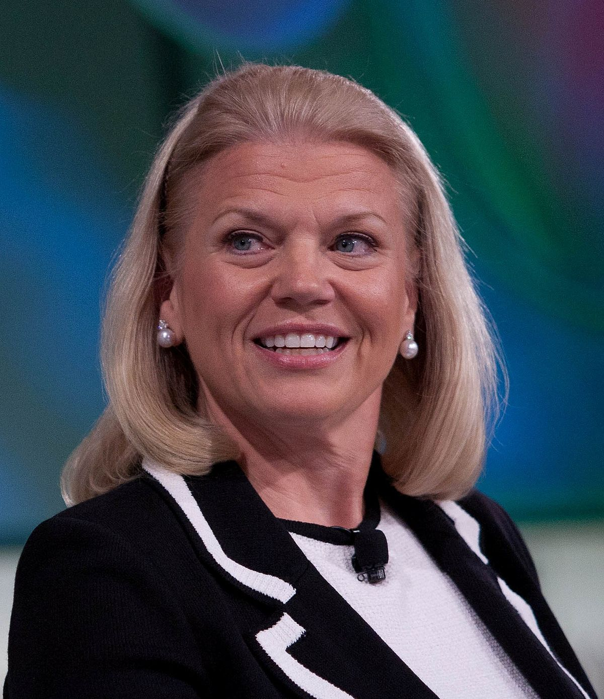

"A diversificação é necessaria para que as pessoas saiam mais da mesma linha de pensamento."
A tecnologia abrange diversas áreas, em todas elas profissionais do sexo feminino estão sempre
em minoria, falta divulgação de exemplos que as inspirem e sobram estereótipos que reforçam a
ideia de que a Tecnologia é um campo exclusivo para homens.
Na atualidade é necessário o empoderamento dessas grandes mulheres, daremos alguns exemplos para
que as inspirem em crescer profissionalmente cada vez mais

A {Reprograma} é uma iniciativa de impacto social que foca em ensinar programação para mulheres cis e trans que não têm recursos e/ou oportunidades para aprender a programar.
Progra{m}aria foi de um grupo de estudos a inspirar e ensinar mulheres a trabalharem com tecnologia, além de um conteúdo disponível no blog que complementam o objetivo, elas têm um curso de programação pago, porém com possibilidade de bolsa.
Laboratória é uma startup que oferece programa de formação de programadoras, após, também ajudam a encontrar o primeiro emprego na área. O treinamento é gratuito, quando já empregadas, as mulheres contribuem com uma quantia para ajudar o programa.
Codamos, reúne eventos, meetups, cursos, workshops, palestras e palestrantes através de eventos inclusivos apoiando a diversidade.
Mulheres na computação Mulheres na computação insere diversos assuntos relacionados a tecnologia e empreendedorismo. Também fazem publicações de vagas.